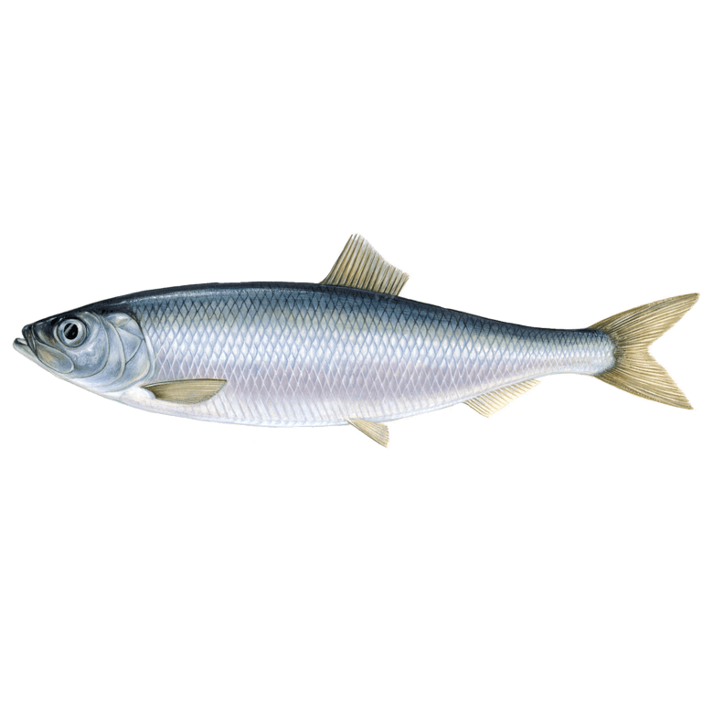

Heeringas
Atlandi heeringas ehk harilik heeringas (Clupea harengus) on heeringlaste sugukonda heeringa perekonda kuuluv kalaliik.
Atlandi heeringas jaguneb neljaks alamliigiks. Läänemerd asustab räim (Clupea harengus membras).
Skandinaavia heeringas ehk kevadkuduheeringas koeb Norra ranniku läheduses, Orkney ja Shetlandi saarte ookeanipoolsetes vetes, Fääri saarestiku ümbruse mandrinõlval ja piki Islandi lõunarannikut.